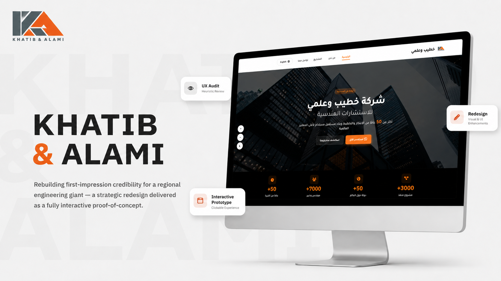
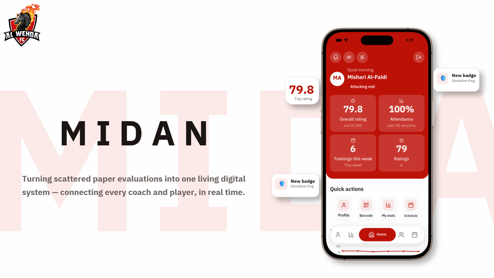

Product Design
End-to-end ownership from problem framing and research through to shipped, tested interfaces.
HCI Specialist / Product Designer / UX/UI Designer
I turn research into interfaces people understand without being taught. Graduated with Honors in HCI from Umm Al-Qura University — proudly part of the first-ever graduating class for a Bachelor's in HCI in the Middle East.
01 — Strategic Approach
I treat design as an applied science, not decoration. Every screen I ship is a hypothesis about how people think, decide, and act — then validated against evidence rather than taste. I work from research and behavioral data, so decisions are traceable to a reason, not a mood board.
My process is human-centered: I map the user's complete journey alongside the system's architecture before touching a single pixel. I stress-test flows against established usability heuristics, engineer motivation with Fogg's Behavior Model (B = MAP) so the right action happens at the right moment, and design for the full range of human ability through inclusive design — accessibility treated as a baseline, never an afterthought.
The result is interfaces that reduce cognitive load, earn trust quickly, and hold up under real use.
Core competencies
End-to-end ownership from problem framing and research through to shipped, tested interfaces.
Applying psychology and behavioral economics, utilizing frameworks like Fogg's Behavior Model, to shape sustainable user habits and drive meaningful engagement.
Building for the full range of human ability — accessibility treated as a baseline, not a feature.
Turning dense information into structures the eye can read at a glance and trust.
02 — Selected Work

Corporate Website Redesign
A strategic UX/UI overhaul of the firm's corporate website built to earn client trust by putting the company's massive achievements front and centre. I reshaped the user journey and applied robust visual-design principles so credibility is felt within seconds of arrival.

Talent Management Platform · Al Wehda Club
An 8-month rigorous project designing a comprehensive multi-sided digital ecosystem for coaches, players, and administrators. Each role gets an interface tuned to its needs, held together by role-based usability and inclusive design across the entire platform.